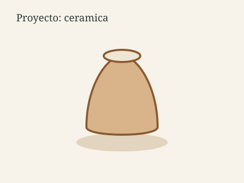
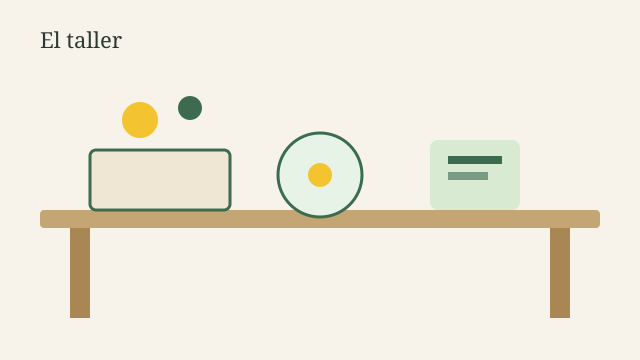

Cuencos y jarras
Un ciclo de cuatro encuentros para modelar un set de cubiertos de mesa: cuencos, una jarra y platos pequeños.
Esta página reúne piezas, láminas y experiencias de clase. Cada proyecto muestra un oficio distinto y el resultado de trabajar en grupo.
Elegí dos líneas que se repiten en el taller: objetos de cerámica para el día a día e ilustración de plantas nativas.

Cuencos y jarras del ciclo de mesa.

Láminas de patio, listas para enmarcar.

El espacio compartido durante las clases.
Un ciclo de cuatro encuentros para modelar un set de cubiertos de mesa: cuencos, una jarra y platos pequeños.
Observamos plantas reales, armamos una composición y terminamos una lámina lista para enmarcar.